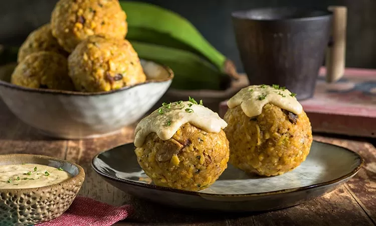

Bolón de verde is a dish of green plantain fritters that are typically filled with cheese, chicharrónes, or chorizo. It is a traditional and national Ecuadorian dish that’s usually eaten for breakfast. The preparation starts with cooking or frying the plantains, which are then mashed, seasoned, mixed with the filling, and shaped into balls. They are usually then fried once again to make them crispy.
Meal prep time : 33 minutes
Servings : 10